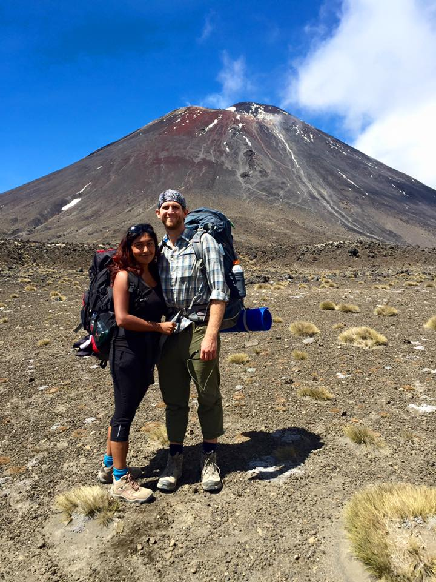
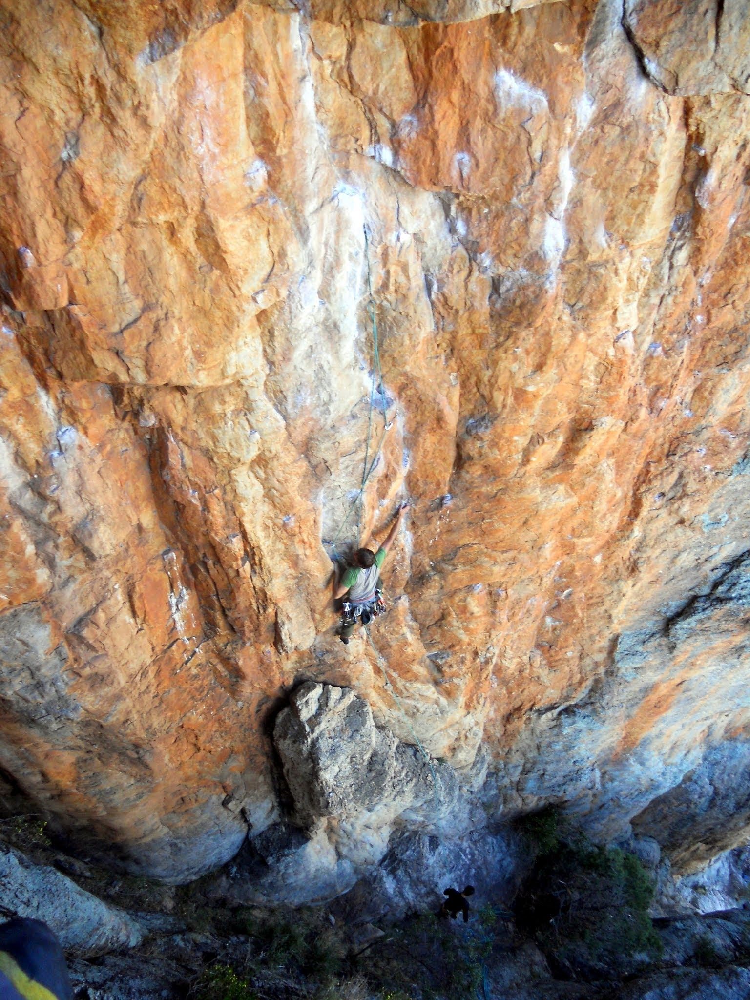
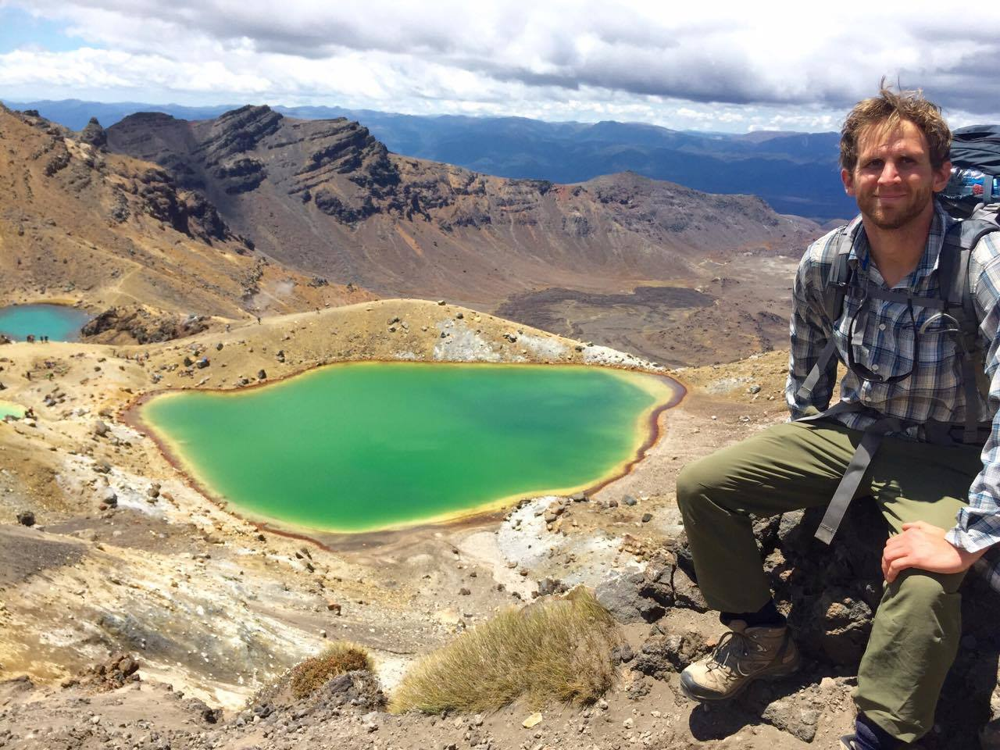
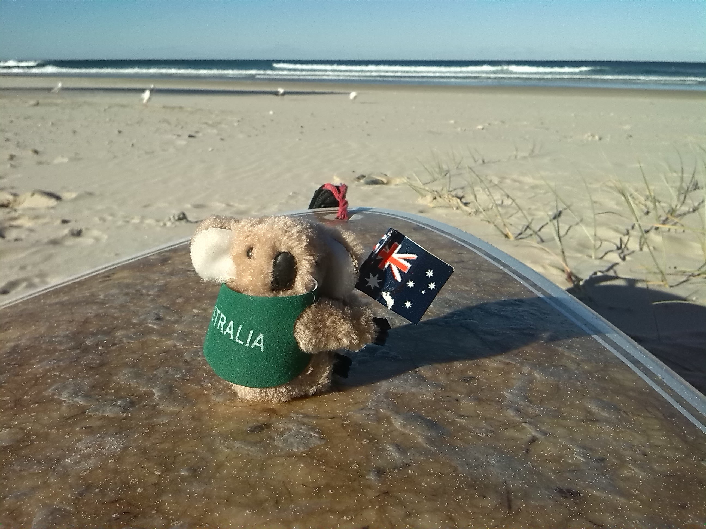
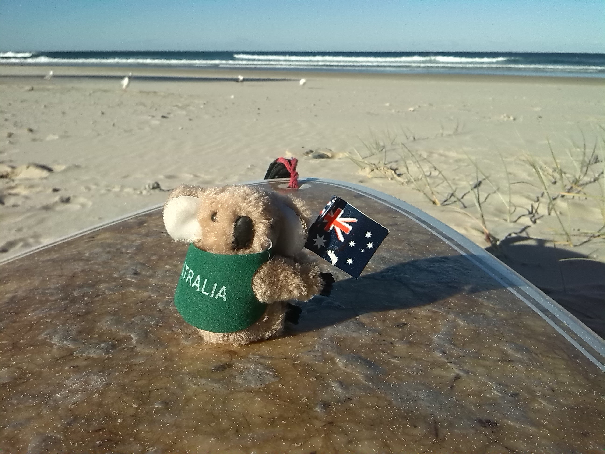

Why Software Development?
I have taken on many roles in my proffesional career from working Banquets as a Server/Bartender to B2B Sales and Recruitment. Over the last 5 years of taking on those roles I have been seeking a career that matches what I'm looking for:
- Challenges the Mind
- Social - Team Oriented
- Stable - Comfortable living
- Entrepreneurial
I believe becoming a Software Developer can combine all of those aspects.
Goals
I find goals easy to write down and challenging to achieve. That is why I'm here today. Red is a big step to plan on achieving my goals. I've heard you should set goals that make you want to wake up in the morning. So here we go:
- Wake Up in the Morning!!! Let's face it I'm a night owl.
- Graduate from the Red Academy with CONFIDENCE!
- Develop and place an app in the App Store - achieve 10,000 downloads.
- Become a Travelling Developer.
Passions & Hobbies
- Outdoors
- Backpacking/Camping
- Rock Climbing
- Hiking
- Travelling
- USA
- Mexico
- Hong Kong
- Australia
- New Zealand
- Argentina
- Canada - Of course.
Photo Gallery



 
